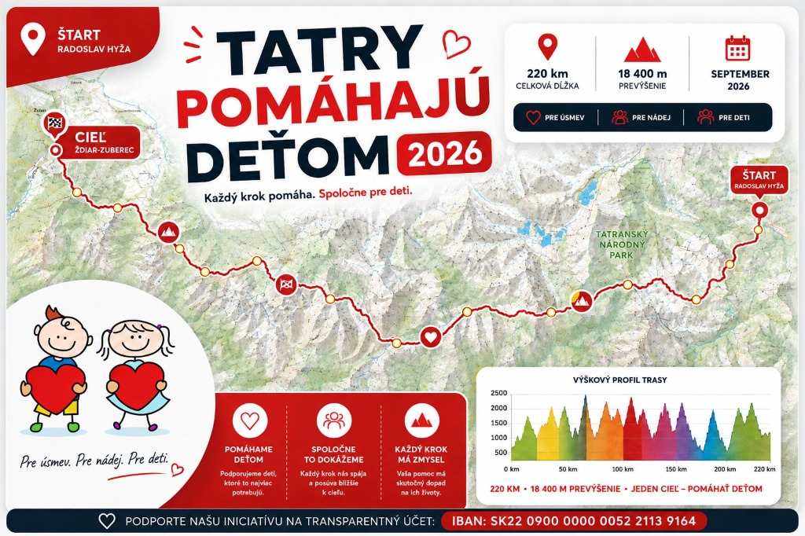

Po 2 rokoch nastal opäť moment vybrať sa na trek po Slovensku s pomocou pre deti. Po úspešnej Ceste SNP 2024, kde sa vyzbieralo 12 500 €, vyrážam v septembri 2026 na náročný prechod Tatier zo Ždiaru do Zuberca.

Prepojenie extrémneho fyzického výkonu v horách s konkrétnou a transparentnou pomocou deťom, ktoré to najviac potrebujú.
O charitatívnom treku a pomoci deťom informujú popredné slovenské médiá a regionálne portály.
Prechod cez všetky turisticky dostupné 2-tisícovky a horské chaty od Belianskych a Vysokých Tatier až po Roháče v Západných Tatrách.
Počas septembrového treku tu nájdete denné zápisky, fotografie a aktuálny stav expedície.
Vaša pomoc putuje priamo trom rodinám so znevýhodnenými deťmi a trom organizáciám starajúcim sa o deti.